The G20 is the latest in a series of post–World War II initiatives aimed at international coordination of economic policy, which include institutions such as the "Bretton Woods twins", the International Monetary Fund and the World Bank, and what is now the World Trade Organization.[17] The G20 was foreshadowed at the Cologne summit of the G7 in June 1999, and formally established at the G7 Finance Ministers' meeting on 26 September 1999 with an inaugural meeting on 15–16 December 1999 in Berlin. Canadian finance minister Paul Martin was chosen as the first chairman and German finance minister Hans Eichel hosted the inaugural meeting
The G20 is the latest in a series of post–World War II initiatives aimed at international coordination of economic policy, which include institutions such as the "Bretton Woods twins", the International Monetary Fund and the World Bank, and what is now the World Trade Organization. The G20 was foreshadowed at the Cologne summit of the G7 in June 1999, and formally established at the G7 Finance Ministers' meeting on 26 September 1999 with an inaugural meeting on 15–16 December 1999 in Berlin. Canadian finance minister Paul Martin was chosen as the first chairman and German finance minister Hans Eichel hosted the inaugural meeting
The G20's primary focus has been governance of the global economy. Summit themes have varied from year to year. The theme of the 2006 G20 ministerial meeting was "Building and Sustaining Prosperity". The issues discussed included domestic reforms to achieve "sustained growth", global energy and resource commodity markets, reform of the World Bank and IMF, and the impact of demographic changes. In 2007, South Africa hosted the secretariat with Trevor A. Manuel, South African Minister of Finance as chairperson of the G20. In 2008, Guido Mantega, Brazil's Minister of Finance, was the G20 chairperson and proposed dialogue on competition in financial markets, clean energy, economic development and fiscal elements of growth and development. On 11 October 2008 after a meeting of G8 finance ministers, US President George W. Bush stated that the next meeting of the G20 would be important in finding solutions to the burgeoning economic crisis of 2008.
The Summit of G20 Finance Ministers and
Central Bank Governors, who prepare the leaders' summit and implement their decisions, was
created as a response both to the financial crisis of 2007–2008 and to a growing recognition
that key emerging countries were not adequately included in the core of global economic
discussion and governance. Additionally, G20 summits of heads of state or government were held.
After the 2008 debut summit in Washington, DC, G20 leaders met twice a year: in London and
Pittsburgh in 2009, and in Toronto and Seoul in 2010.
Since 2011, when France chaired and hosted the G20, the summits have been held only once a
year. The 2016 summit was held in Hangzhou, China, the 2017 summit was held in Hamburg,
Germany, the 2018 summit was held in Buenos Aires, Argentina, the 2019 summit was held in Osaka,
Japan, the 2020 summit was scheduled in Riyadh, Saudi Arabia but it was held virtually due to
Covid-19, the 2021 summit was held in Rome, Italy and the 2022 summit was held in Bali,
Indonesia.
Several other ministerial-level G20 meetings have been held since 2010. Agriculture ministerial
meetings were conducted in 2011 and 2012; meetings of foreign ministers were held in 2012 and
2013; trade ministers met in 2012 and 2014, and employment ministerial meetings have taken place
annually since 2010.
In 2012, the G20 Ministers of Tourism and Heads of Delegation of G20 member countries and other
invited States, as well as representatives from the World Travel and Tourism Council (WTTC),
World Tourism Organization (UNWTO) and other organisations in the Travel & Tourism sector met in
Mérida, Mexico, on May 16 at the 4th G20 meeting and focused on 'Tourism as a means to Job
Creation'. As a result of this meeting and The World Travel & Tourism Council's Visa Impact
Research, later on the Leaders of the G20, convened in Los Cabos on 18–19 June, would recognise
the impact of Travel & Tourism for the first time. That year, the G20 Leaders Declaration added
the following statement: "We recognise the role of travel and tourism as a vehicle for job
creation, economic growth and development, and, while recognizing the sovereign right of States
to control the entry of foreign nationals, we will work towards developing travel facilitation
initiatives in support of job creation, quality work, poverty reduction and global growth."
In March 2014, the former Australian foreign minister Julie Bishop, when Australia was hosting
the 2014 G20 summit in Brisbane, proposed to ban Russia from the summit over its annexation of
Ukrainian Crimea. The BRICS foreign ministers subsequently reminded Bishop that "the
custodianship of the G20 belongs to all Member States equally and no one Member State can
unilaterally determine its nature and character."
In 2016, the G20 framed its commitment to the 2030 Agenda, Sustainable Development Goals in
three key themes; the promotion of strong sustainable and balanced growth; protection of the
planet from degradation; and furthering co-operation with low-income and developing countries.
At the G20 Summit in Hangzhou, members agreed on an action plan and issued a high level
principles document to member countries to help facilitate the agenda's implementation.
Japan hosted the 2019 summit, The 2020 summit was to be held in Saudi Arabia, but was
instead held virtually on 21–22 November 2020 due to the COVID-19 pandemic under the presidency
of Saudi Arabia. 2021 G20 Rome summit which was held in Rome, the capital city of Italy, on
30–31 October 2021.
Indonesia held the G20 presidency from 1 December 2021 to 30 November 2022. During its
presidency, Indonesia focused on the global COVID-19 pandemic and how to collectively overcome
the challenges related to it. The three priorities of Indonesia's G20 presidency were global
health architecture, digital transformations, and sustainable energy transitions.
India has held the G20 presidency since 1 December 2022, with its presidency's theme being
Vasudhaiva Kutumbakam or "वसुधैव कुटुम्बकम्" in Sanskrit or translated as "One Earth, One
Family, One Future'" in English and the summit was held from 9 September 2023 to 10
September 2023 at Bharat Mandapam, New Delhi. In an interview on 26 August 2023, Prime
Minister Narendra Modi expressed optimism about the G20 countries' evolving agenda under India's
presidency, shifting toward a human-centric development approach that aligns with the concerns
of the Global South, including addressing climate change, debt restructuring through the G20's
Common Framework for debt, and a strategy for regulation of global cryptocurrencies. G20 became
G20 by the inclusion of African Union, it is also the first inclusion since 1999.
The G20's primary focus has been governance of the global economy. Summit themes have varied from year to year. The theme of the 2006 G20 ministerial meeting was "Building and Sustaining Prosperity". The issues discussed included domestic reforms to achieve "sustained growth", global energy and resource commodity markets, reform of the World Bank and IMF, and the impact of demographic changes. In 2007, South Africa hosted the secretariat with Trevor A. Manuel, South African Minister of Finance as chairperson of the G20. In 2008, Guido Mantega, Brazil's Minister of Finance, was the G20 chairperson and proposed dialogue on competition in financial markets, clean energy, economic development and fiscal elements of growth and development. On 11 October 2008 after a meeting of G8 finance ministers, US President George W. Bush stated that the next meeting of the G20 would be important in finding solutions to the burgeoning economic crisis of 2008.
| Host Country | Date | Host City |
|---|---|---|
 United States United States
|
14–15 November 2008 | Washington, D.C. |
 United Kingdom United Kingdom
|
2 April 2009 | London |
|
United States
|
24–25 September 2009 | Pittsburgh |
 Canada Canada
|
26–27 June 2010 | Tronto |
 South Korea South Korea
|
11–12 November 2010 | Seoul |
| France | 3–4 November 2011 | Cannes |
| 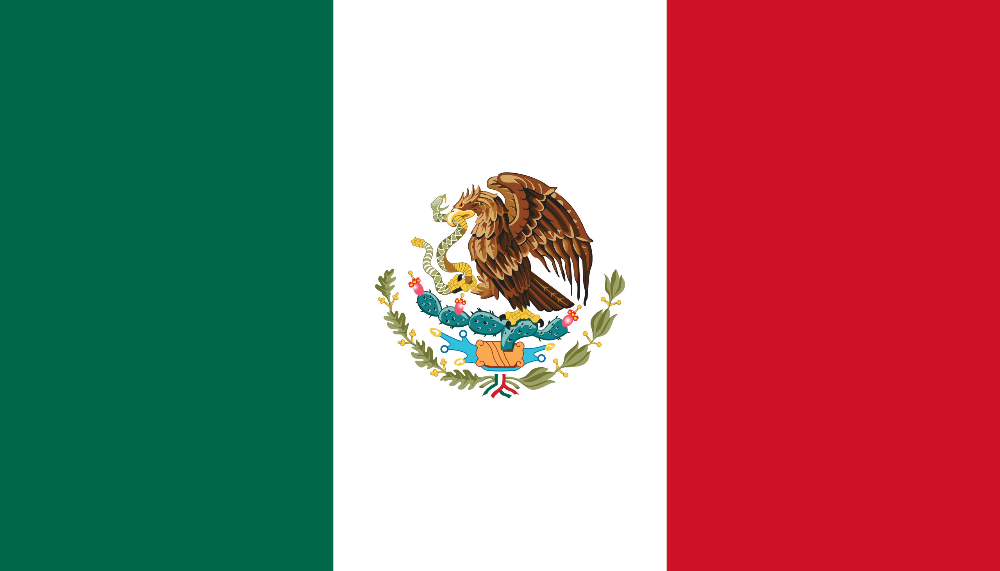 Mexico | 18–19 June 2012 | San José del Cabo, Los Cabos |
| 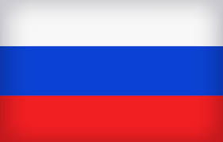 Russia | 5–6 September 2013 | Saint Petersburg |
| 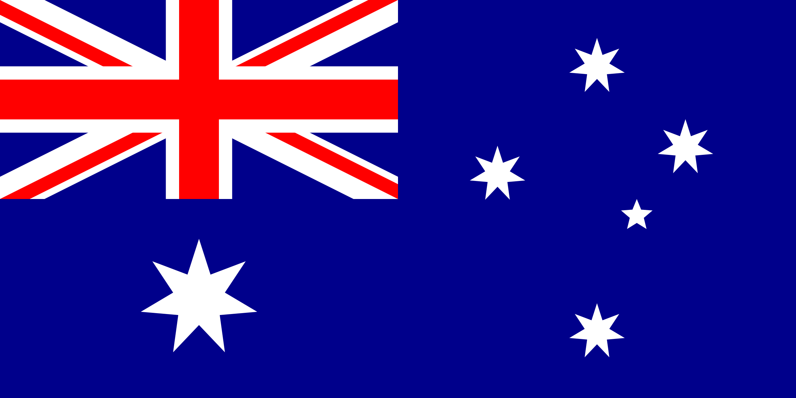 Australia | 15–16 November 2014 | Brisbane |
| 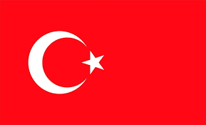 Turkey | 15–16 November 2015 | Seric, Antalya |
 China China
|
4–5 September 2016 | Hangzhau |
 Germany Germany
|
7–8 July 2017 | Hamsburg |
| 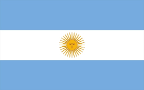 Argentina | 30 November – 1 December 2018 | Beunos Ares |
| 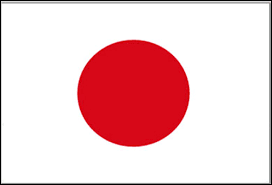 Japan | 28–29 June 2019 | Osak |
| 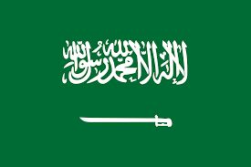 Saudi Arabia | 21–22 November 2020 | Riyad |
| Italy | 30–31 October 2021 | Rome |
| 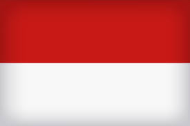 Indonesia | 15–16 November 2022 | Nusa Dua, Bali |
| 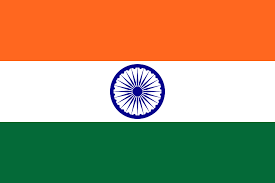 India | 9–10 September 2023 | New Delhi |
| 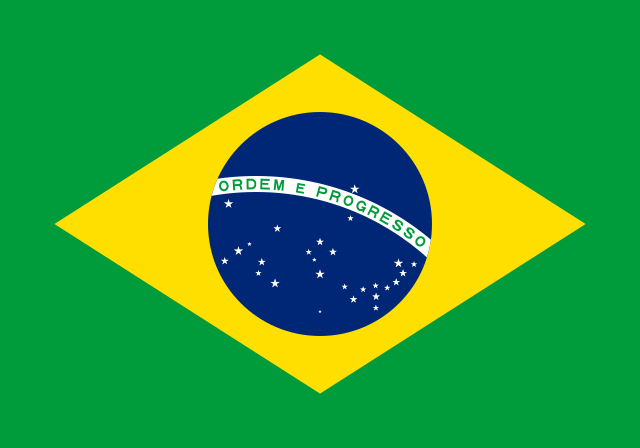 Brazil | 18–19 November 2024 | Rio De Janeiro |
| 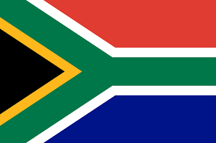 South Africa | TBD 2025 | TBD |
|
United States
|
TBD 2026 | TBD |